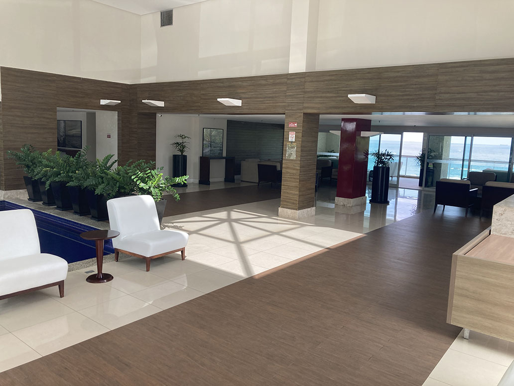

Hall de entrada
Estudo para tornar o hall mais leve, sofisticado e coerente com a condição de prédio residencial frente-mar.

Proposta visual para valorização do hall de entrada.
Clique aqui para ver a imagem maior

Hall de entrada
O hall de entrada pode melhorar bastante sem depender de uma reforma pesada. A ideia central é trabalhar com mudanças simples, criativas e de baixo custo, preservando o que já existe e ajustando aquilo que hoje pesa visualmente no ambiente.
A primeira frente é a leitura do mobiliário. Muitas vezes, trocar ou adaptar estofados, clarear estruturas, reorganizar poltronas e reduzir excesso de contraste já transforma a percepção do espaço sem exigir compra de móveis novos.
A segunda frente é a iluminação. O hall já possui uma base interessante, mas pode ganhar mais acolhimento com luz quente bem dosada, evitando exageros e valorizando volumes, plantas e pontos de permanência.
A terceira frente é a composição estética: quadros, plantas melhor posicionadas, pequenos ajustes de cor e uma curadoria mais clara dos objetos podem fazer o espaço parecer mais sofisticado, menos pesado e mais coerente com a condição de prédio residencial frente-mar.
O objetivo não é reinventar o hall, mas melhorar sua leitura. Com intervenções moderadas, o ambiente pode comunicar mais leveza, cuidado e valorização patrimonial.